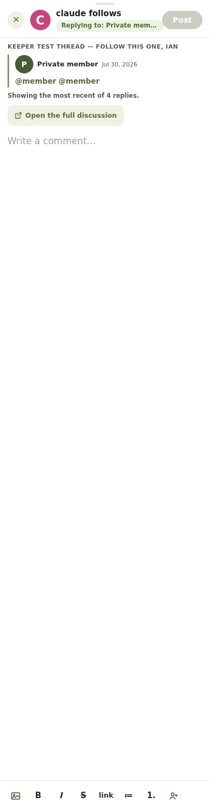
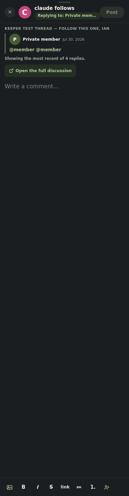
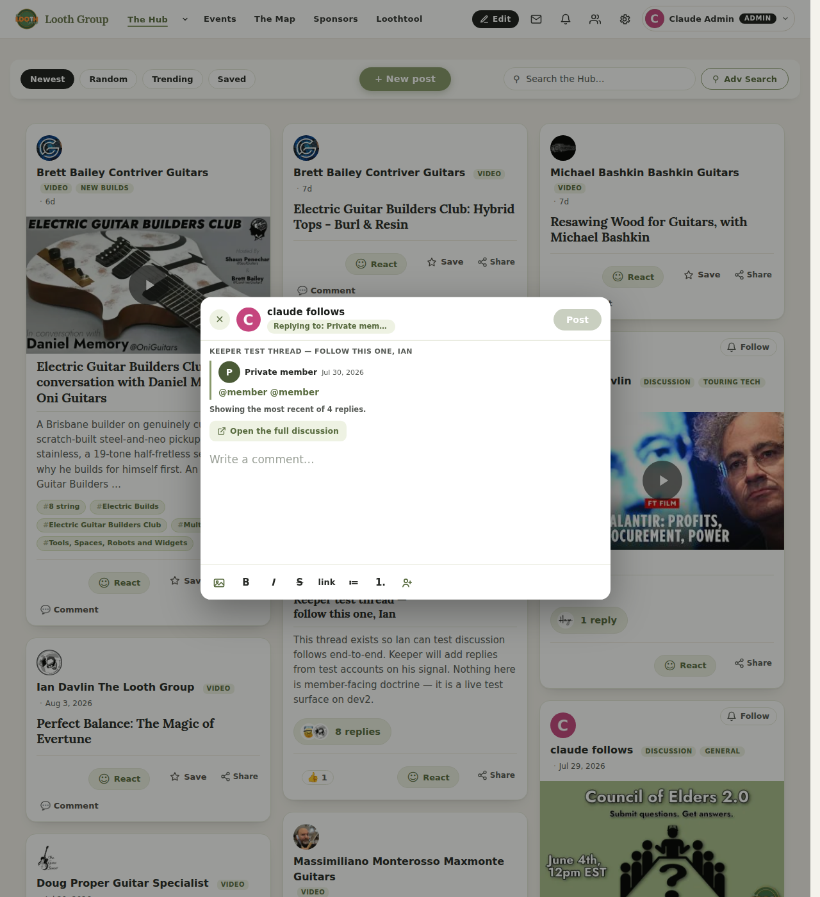
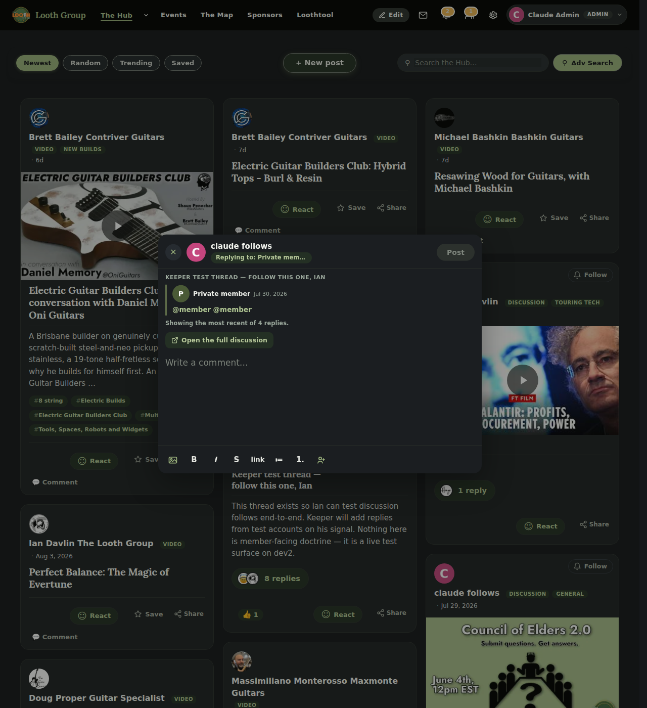

These are photographs of the running build, not the mock you
picked from on 30 July. Same layout A you chose: the quote is their reply, never your
own post, with a link to the full discussion beside the composer.
What to look at. The quote at the top of the composer is the reply that rang
you. Under it, “Showing the most recent of 4 replies” — that line only appears when
several people replied and the notification merged them, so you are never shown one answer
while three are hidden. The composer itself is empty: it is waiting for you,
not carrying someone else's text.
Phone — 390px

Light

Dark
Desktop — 1280px

Light

Dark
What was actually checked, in a real browser
All four of the pictures above passed every one of
these. Nothing here is read off the source.
the modal opens from the notification's own link
the quote paints — and its HTML came from the real database, through
the branch's own endpoint
the composer opens empty ('', measured — not “nothing was
passed to it”)
the full-post link is there beside it
the merged-replies line renders when several people replied
the scrub: close it, open an ordinary reply, and the quote is
cleared — 0 bytes left, not merely hidden. A leftover quote over an unrelated
reply would be its own small lie.
Still off. The feature is behind a flag that is off, so nothing
has changed for anyone yet. It stays off until you have looked at the real thing on the site —
these pictures are so you can decide whether it is worth switching on, not a substitute for
that.